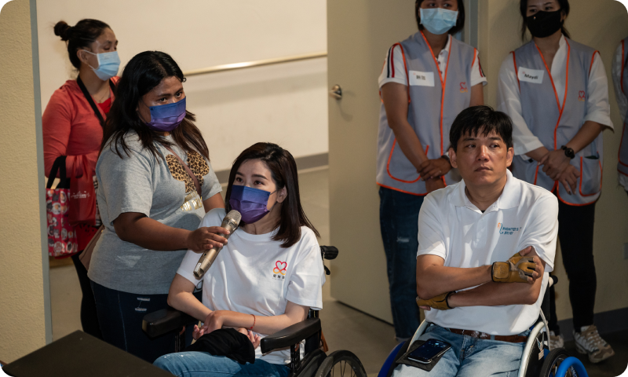
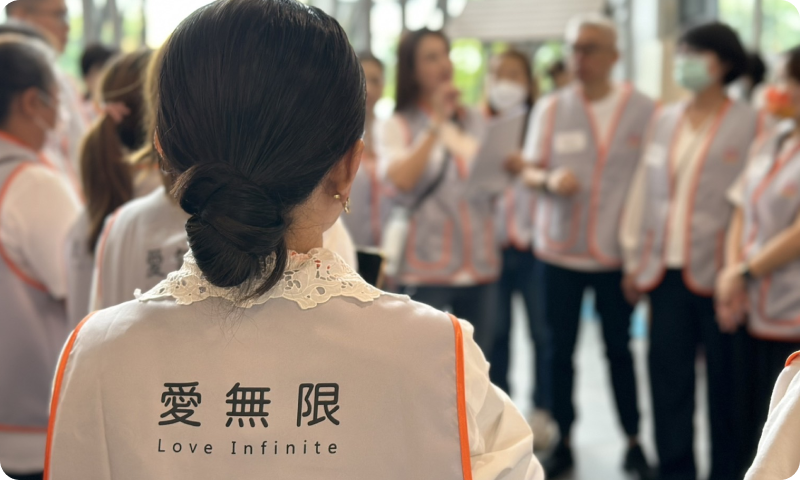

我們對跨障別的看見
對視障者的看見
很多時候，只要我們多做一點點，就能讓他們參與更多。
因為，看不看得見這個世界，生活方式差很多。
你以為平凡的日常，在他們眼裡，可能是難以企及的夢想。
你所想像的世界，和他們真實走過的世界，可能天差地遠。

對身障者的看見
對輪椅族來說，「搭車回家」竟是一場漫長等待。那天大雨中，我和協助者一通通撥電話，換來的卻是拒絕與延遲；轉向路邊攔車，司機們多數搖頭、沉默開走。等了近兩小時，終於有一位願意載我們，那一刻的感動中夾雜著鼻酸。輪椅族從不求特別對待，只希望能像一般人一樣，說走就走。無障礙，不該只是設施，更是態度與理解。
MORE

對視障者的看見
當警報響起時，對多數人是警訊，對聽障者卻可能是無聲的危機。一位聽障包裝員因未察覺火災警示，最終無法逃生。她的朋友說：「我們不覺得自己不方便，只希望有人記得提醒我們。」這句話令人鼻酸，也提醒我們：真正的安全，不該排除任何感官。無障礙不只是設施，更是資訊的平等，是每個人都能平安離開現場的權利。
MORE